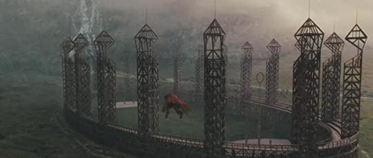
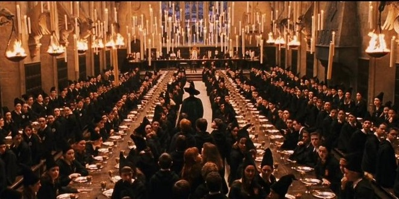

What is hogwarts-Hogwarts School of Witchcraft and Wizardry is a fictional British boarding school of magic for students aged eleven to eighteen, and is the primary setting for the first six books in J. K. Rowling's Harry Potter series and serves as a major setting in the Wizarding World universe. Wher is hogwarts originated from-At some point in the tenth century, four of the greatest witches and wizards that ever lived founded Hogwarts School of Witchcraft and Wizardry. Their names were Godric Gryffindor, Rowena Ravenclaw, Helga Hufflepuff and Salazar Slytherin. As The Sorting Hat told us, their reason for doing so was because they had the ‘selfsame yearning, to make the world’s best magic school’, and once they did, each created their own house to represent a personality and skill that they wanted to nurture. Gryffindor students embodied bravery and chivalry; Ravenclaw, intelligence and wit; Hufflepuff, loyalty and fair play; and Slytherin, the values of being sly and cunning.
Here are the best places on campus
 